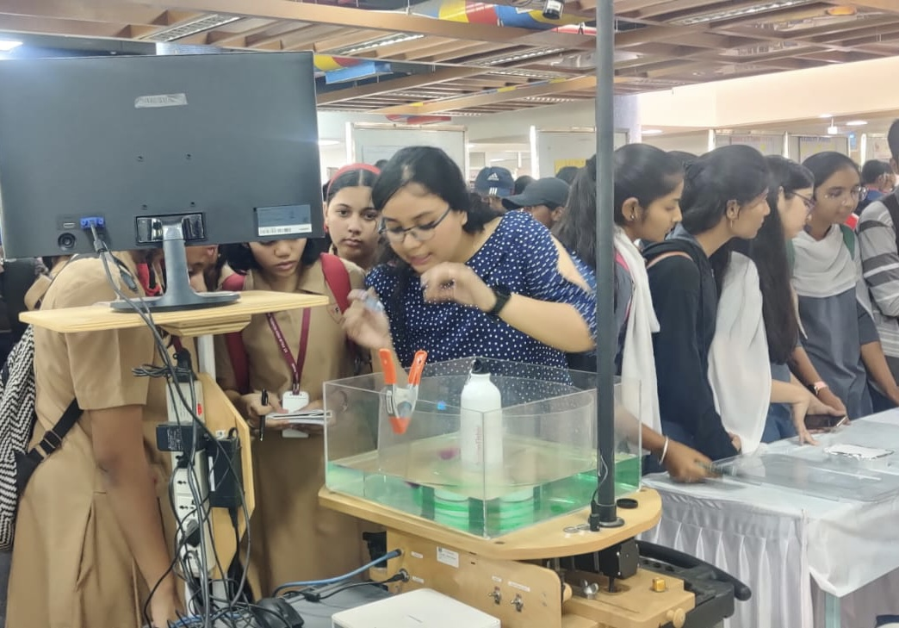
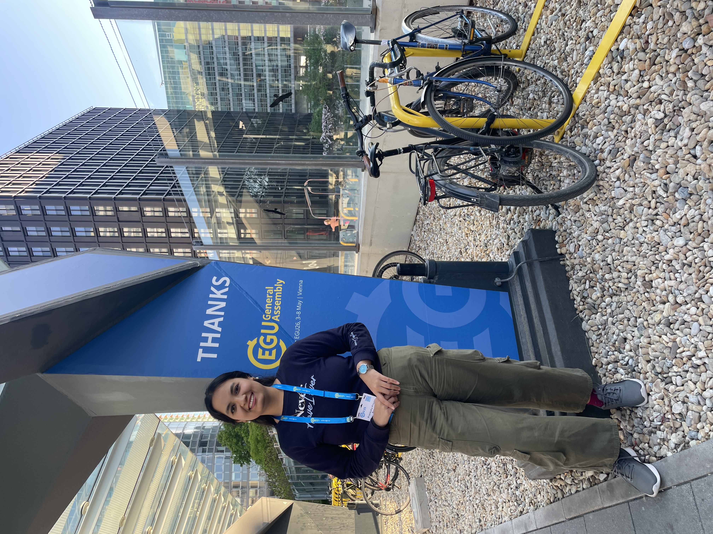
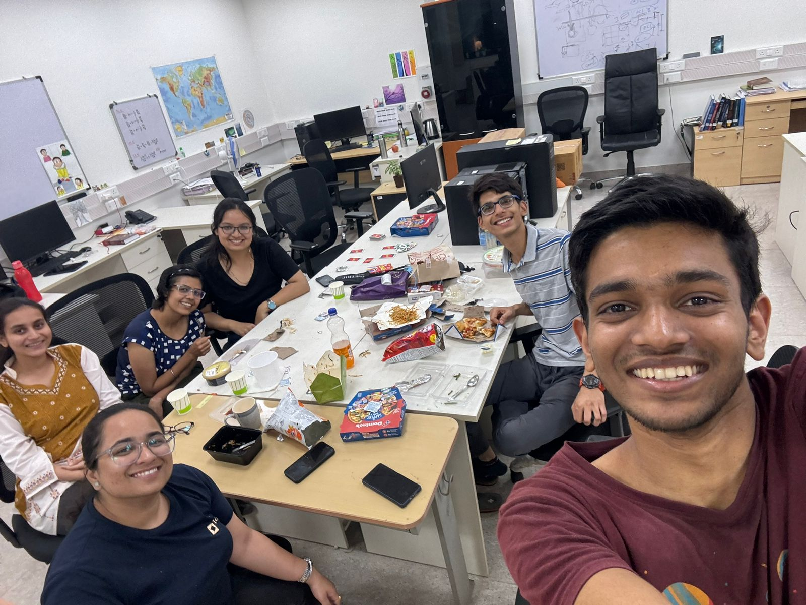
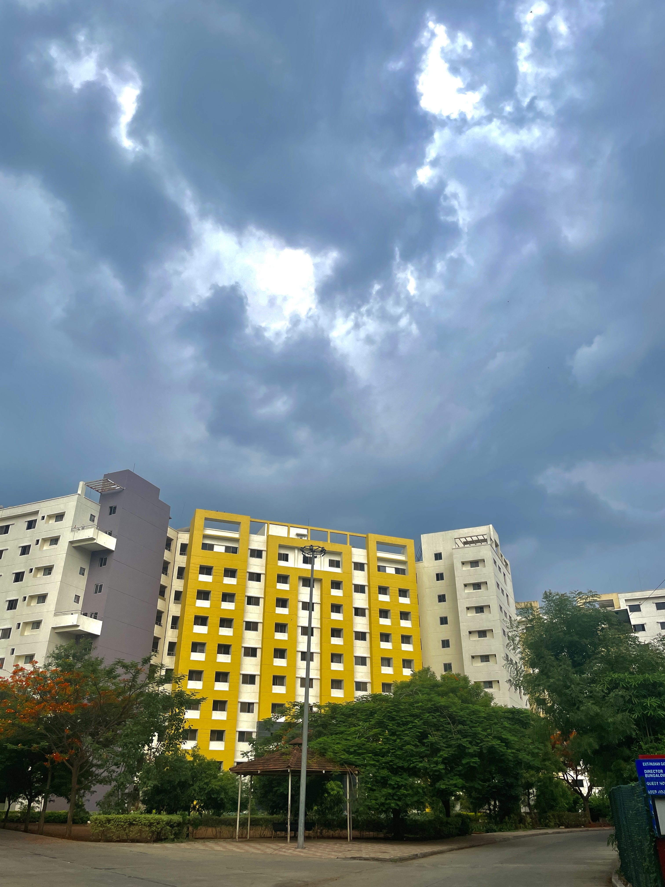
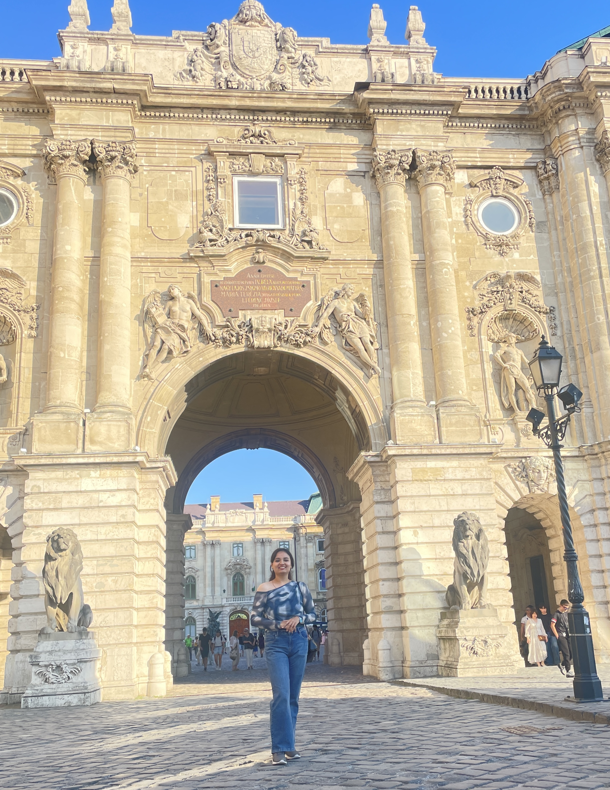

Beyond research
People, places & moments along the way.
Science is shaped by community and curiosity. Here are a few glimpses from conferences, campus life, travel, and the people who make the journey memorable.




